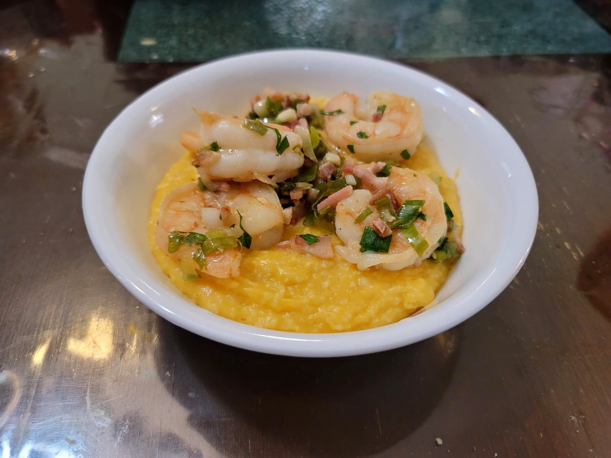

Shrimp and Grits

Ingredients:
Grits:
- 4 cups Water or Shrimp stock
- 1 cup Grits
- Salt, to taste
- Black pepper, to taste
- 3 tbsp Butter
- 2 cups Cheddar cheese, shredded
Shrimp:
- 1 lb Shrimp, peeled and deveined
- 6 slices Bacon
- 4 tsp Lemon juice
- 2 tbsp Parsley, chopped
- 1 bunch Scallions, thinly sliced
- 1 large clove Garlic
Instructions:
- Bring the water/shrimp stock to a boil in a large saucepan. Add salt and pepper to taste. Stir in the grits and reduce to a low simmer. Let cook for 15-25 minutes or until the grits are completely cooked. Taste and add seasoning as needed. Then remove from heat and stir in the butter and cheese until homogenous.
- Heat a large pan over medium heat. Add the bacon and cook both sides until crispy. Then remove from the pan and finely chop the bacon. Reserve.
- To the same pan, add in the shrimp and sauté until pink throughout. Then add in the bacon, lemon juice, parsley, scallions, and garlic. Sauté for 3 more minutes and then remove from the heat.
- Serve the grits topped with shrimp mixture. Serve hot.